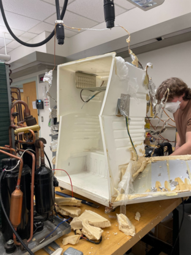

A team course project analysing an inoperable 1991 mini fridge (Citizen JRF 248I, running the old CFC refrigerant R-12) to model its refrigeration cycle and evaluate practical efficiency and sustainability improvements.

We tore the fridge down and isolated the refrigeration cycle completely to identify its components and cycle properties, then built steady-state thermal models (Tespy, Excel, MATLAB) of the baseline system and every improvement permutation so they could be ranked by annual energy and cost.
Four improvements were considered:
Individually, the cork insulation, selected using Ansys Granta EduPack, cut evaporator heat by about 26 percent, and a modern compressor cut electricity use by about 33 percent, while the cleaner R-600a refrigerant traded higher energy use for much lower environmental impact. The practical set of improvements reduced energy use by about 79 kWh/yr, only about $10/yr at BC Hydro rates, which doesn't pay back the roughly $155 upgrade cost within the fridge's realistic lifespan. The real value is eliminating the CFC refrigerant and using sustainable materials.
Refrigeration-cycle analysis, heat-transfer modelling, and thermo-fluid system evaluation.